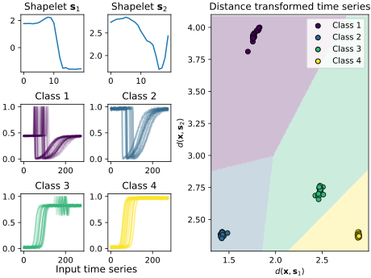

Note
Click here to download the full example code
Learning Shapelets: decision boundaries in 2D distance space¶
This example illustrates the use of the “Learning Shapelets” method in order to learn a collection of shapelets that linearly separates the timeseries. In this example, we will extract two shapelets which are then used to transform our input time series in a two-dimensional space, which is called the shapelet-transform space in the related literature. Moreover, we plot the decision boundaries of our classifier for each of the different classes.
More information on the method can be found at: http://fs.ismll.de/publicspace/LearningShapelets/.
Out:
/Users/hong/miniconda3/envs/nas/lib/python3.7/site-packages/tslearn/shapelets/shapelets.py:357: FutureWarning: The default value for 'scale' is set to False in version 0.4 to ensure backward compatibility, but is likely to change in a future version.
FutureWarning)
# Author: Gilles Vandewiele
# License: BSD 3 clause
import numpy
from matplotlib import cm
import matplotlib.pyplot as plt
from tslearn.datasets import CachedDatasets
from tslearn.preprocessing import TimeSeriesScalerMinMax
from tslearn.shapelets import LearningShapelets
from tensorflow.keras.optimizers import Adam
# Set a seed to ensure determinism
numpy.random.seed(42)
# Load the Trace dataset
X_train, y_train, _, _ = CachedDatasets().load_dataset("Trace")
# Normalize the time series
X_train = TimeSeriesScalerMinMax().fit_transform(X_train)
# Get statistics of the dataset
n_ts, ts_sz = X_train.shape[:2]
n_classes = len(set(y_train))
# We will extract 2 shapelets and align them with the time series
shapelet_sizes = {20: 2}
# Define the model and fit it using the training data
shp_clf = LearningShapelets(n_shapelets_per_size=shapelet_sizes,
weight_regularizer=0.0001,
optimizer=Adam(lr=0.01),
max_iter=300,
verbose=0,
scale=False,
random_state=42)
shp_clf.fit(X_train, y_train)
# We will plot our distances in a 2D space
distances = shp_clf.transform(X_train).reshape((-1, 2))
weights, biases = shp_clf.get_weights('classification')
# Create a grid for our two shapelets on the left and distances on the right
viridis = cm.get_cmap('viridis', 4)
fig = plt.figure(constrained_layout=True)
gs = fig.add_gridspec(3, 9)
fig_ax1 = fig.add_subplot(gs[0, :2])
fig_ax2 = fig.add_subplot(gs[0, 2:4])
fig_ax3a = fig.add_subplot(gs[1, :2])
fig_ax3b = fig.add_subplot(gs[1, 2:4])
fig_ax3c = fig.add_subplot(gs[2, :2])
fig_ax3d = fig.add_subplot(gs[2, 2:4])
fig_ax4 = fig.add_subplot(gs[:, 4:])
# Plot our two shapelets on the left side
fig_ax1.plot(shp_clf.shapelets_[0])
fig_ax1.set_title('Shapelet $\mathbf{s}_1$')
fig_ax2.plot(shp_clf.shapelets_[1])
fig_ax2.set_title('Shapelet $\mathbf{s}_2$')
# Create the time series of each class
for i, subfig in enumerate([fig_ax3a, fig_ax3b, fig_ax3c, fig_ax3d]):
for k, ts in enumerate(X_train[y_train == i + 1]):
subfig.plot(ts.flatten(), c=viridis(i / 3), alpha=0.25)
subfig.set_title('Class {}'.format(i + 1))
fig.text(x=.15, y=.02, s='Input time series', fontsize=12)
# Create a scatter plot of the 2D distances for the time series of each class.
for i, y in enumerate(numpy.unique(y_train)):
fig_ax4.scatter(distances[y_train == y][:, 0],
distances[y_train == y][:, 1],
c=[viridis(i / 3)] * numpy.sum(y_train == y),
edgecolors='k',
label='Class {}'.format(y))
# Create a meshgrid of the decision boundaries
xmin = numpy.min(distances[:, 0]) - 0.1
xmax = numpy.max(distances[:, 0]) + 0.1
ymin = numpy.min(distances[:, 1]) - 0.1
ymax = numpy.max(distances[:, 1]) + 0.1
xx, yy = numpy.meshgrid(numpy.arange(xmin, xmax, (xmax - xmin)/200),
numpy.arange(ymin, ymax, (ymax - ymin)/200))
Z = []
for x, y in numpy.c_[xx.ravel(), yy.ravel()]:
Z.append(numpy.argmax([biases[i] + weights[0][i]*x + weights[1][i]*y
for i in range(4)]))
Z = numpy.array(Z).reshape(xx.shape)
cs = fig_ax4.contourf(xx, yy, Z / 3, cmap=viridis, alpha=0.25)
fig_ax4.legend()
fig_ax4.set_xlabel('$d(\mathbf{x}, \mathbf{s}_1)$')
fig_ax4.set_ylabel('$d(\mathbf{x}, \mathbf{s}_2)$')
fig_ax4.set_xlim((xmin, xmax))
fig_ax4.set_ylim((ymin, ymax))
fig_ax4.set_title('Distance transformed time series')
plt.show()
Total running time of the script: ( 0 minutes 10.397 seconds)